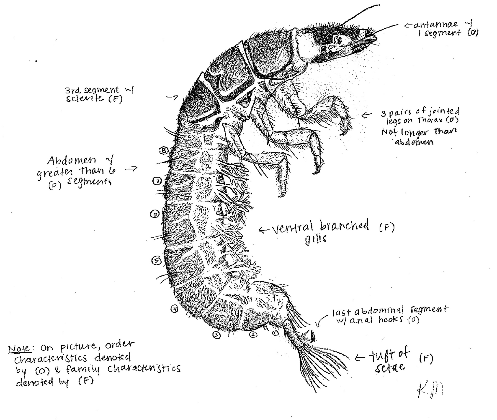
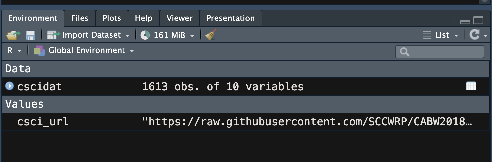
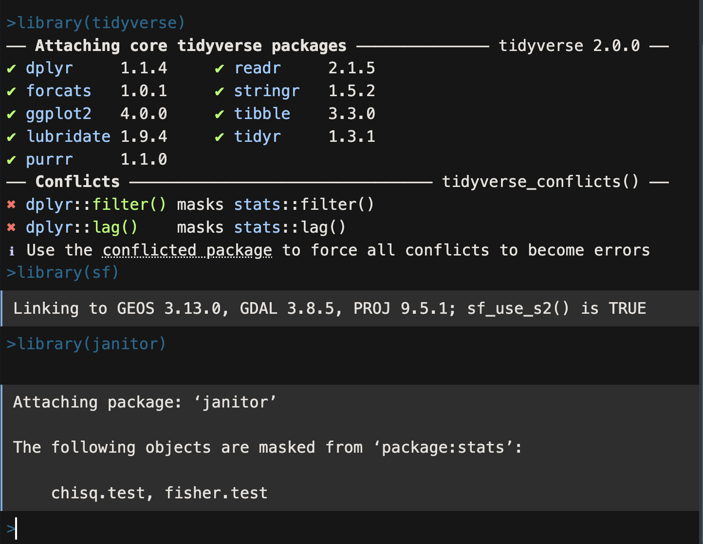

Data Wrangling
Getting Started with Data
There are many ways to learn R, but one of the best ways is to jump right in with some data you can get your hands dirty with. R is an amazing tool, and often there are many ways to do the same thing, however we always need to start with data!
Data Background
The data set we are using is a subset of the California Stream Condition Index (CSCI) and the Algal Stream Condition Index (ASCI). These data represent a portion of the sampling sites that were used to develop each index. The CSCI is based on the comparison of the observed assemblage of benthic macroinvertebrate species to those expected from studying reference streams. It provides a scientifically robust way of assessing and describing conditions and tracking conditions over time or in response to regulatory or restoration actions. Theses indices are built on a few main components:
- Ratio of observed to expected taxanomic groups (
OE) - Proportion of the assemblage that falls into different functional groups that represent species diversity, ecosystem function, and sensitivity to stress.

The CSCI value is not normalized to a 0 to 1 or 100 scale, but instead compares Index values at test sites to values at comparable reference sites. The mean Index value of reference sites is 1.01. The 90th percentile value is 0.85, thus:
- streams with values >0.85 are considered to be likely intact
- streams with values between 0.72 and 0.85 are considered likely altered
- streams with values <0.72 are considered very likely altered
For more information about these data, and lots of great research showing the utility for monitoring, watershed health, and more, check out here, here, here and here.
Import (Read In) Data
Let’s get some data to play with! To start, we’ll use a URL of the data set we want to work with, and read it directly from the interwebs into R. It is a .csv, which means we can use a read.csv function, which is one of the functions that comes built in to R (often called base R).
Tip📣 Interactive Code!
The code below is interactive, meaning you can type and change different things and then click Run Code each time to run R right in the browser. This will run all the code in the chunk. If you are following along in RStudio, run these commands in the Console.
We have data! What did we do? We used <- assignment to save an object into our Environment. In RStudio, take a look at the Environment tab, when we save or assign a value, it should show up there!

Data Structures in R
Let’s try to learn a little more about the kind of data we have. We know it came from a .csv, but in R (and programming generally), there are some specific types and forms of data that we should be aware of. We can use a few more functions here, str() for structure, and head() for the first few rows.
There are a bewildering number of formats for storing data and R is no exception. Understanding the basic building blocks that make up data types is essential. All functions in R require specific types of input data and the key to using functions is knowing how these types relate to each other. We’re going talk about a few of the most common.
Vectors (one-dimensional data)
The basic data format in R is a vector - a one-dimensional grouping of elements that have the same data type. These are all vectors and they are created with the c() function:
The four types of atomic vectors (think atoms that make up a molecule aka vector) are double (or numeric), integer, logical, and character. Each type has some useful properties and each helps define limits or constraints on the data. Basically, functions in R require a specific types of data, and won’t work without them.
Tip📣 Common errors
Play around with these because beyond typing errors, one of the most common issues is data that is of the wrong structure or type. Get to know the basic building blocks!
Data Frames (2 Dimensional Vectors!)
We are likely familiar with a spreadsheet…which is a type of two-dimensional data. In R, the cool thing is that a collection of vectors is a data frame, which keeps columns as vectors of the same type of data. Just as in a spreadsheet, a column describes a variable and rows link observations between columns.
Let’s look at our cscidat again.
Caution📣 Data frame constraints
In R, the only constraints required to make a data frame are:
- Each column contains the same type of data
- The number of observations in each column is equal.
These are good practices to use in spreadsheets too!
Installing Packages
The base install of R is quite powerful, but the universe of R programming is an amazing place, and there are are many thousands of packages available that provide functions we can use for all kinds of things. This diversity and flexibility is what makes R awesome (and sometimes frustrating!). Packages are the spellbooks we can download and install for use. There is so much to say about packages regarding finding them, using them, etc., but for now let’s focus just on the basics.
CRAN: One of the reasons for R’s popularity is CRAN, The Comprehensive R Archive Network. This is where you download R and also where most will gain access to packages (there are other places, but that is for later). Not much else to say about this now other than to be aware of it. As of Fall 2025, there are +22,800 packages on CRAN!
When a package gets installed, that means the source code is downloaded and put into your local computer R library. A default library location is set for you, so let’s download some packages!
Try this in RStudio on your own by running the following code in the Console:
# install packages from CRAN
install.packages("tidyverse")
install.packages("janitor")
install.packages("sf")
Once our Console returns back to the > symbol and there is no red stop sign in the upper right hand corner of Rstudio, let’s see if the installation worked. Try the following in your console:
library(tidyverse)
library(sf)
library(janitor)
Tip📣 Packages
We only need to install packages once per R version, but we need to load packages every session before we can use them with the library() function.
If everything worked, hopefully we’ll see something like below. Don’t worry if the version numbers are slightly different, these can change depending on the operating system and version of R you are using.

Getting Help!
Caution📣 Important Note
If you only take one thing away from today, please make sure it is this: there are many, many options to get help from. Part of learning is sifting through, trying, failing, and trying again. Don’t be discouraged if something isn’t working, please reach out and leverage your R community!
Being able to find help and interpret that help is probably one of the most important skills for learning a new language. R is no different. Help on functions and packages can be accessed directly from R, can be found on CRAN and other official R resources, searched on Google, etc.
Help from the console
Getting help from the console is straightforward and can be done numerous ways. Try some of the commands below and see what happens in RStudio. When you know the name of a function, use the console and type help(<function>) or ?<function>
# Using the help command/shortcut
help("print") # Help on the print command
?print # Help on the print command using the `?` shortcut
# When you know the name of the package
help(package = "sf") # Help on the package `dplyr`
# Don't know the exact name or just part of it
apropos("print") # Returns all available functions with "print" in the name
??print # shortcut, but also searches demos and vignettes in a formatted page
While the resources already mentioned are useful, often the quickest way is to just turn to Google (and now LLM).
However, searching for “R” answers straight from Google can be challenging and still requires understanding what the question (or error) actually is. A few tips:
- When using search engines, always preface the search with “
r” or “[R]” - Get a sense of what sources are reliable
- Take note of the number of hits and date of a web page
- When in doubt, search with the exact error message (see here for details about warnings vs errors)
Caution Using LLMs
Using tools like ChatGPT can be helpful. Some models are better than others for R, but just a strong caution and general bit of advice.
Make sure to understand each piece of code that you run when getting suggestions for code from LLMs. Sometimes it will be great, sometimes it will be very wrong, and many times it’s a combination of both.
Learning to program requires repetition, both in success and in failure, and understanding why something breaks can be much more informative to learning than knowing something just works.